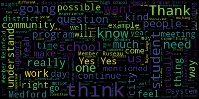

[Olapade]: Thank you.
[Olapade]: It's a quick question going back to the ADA compliance point you made.
[Olapade]: I know you mentioned that you're focusing primarily on the most like egregious, you know, eminent ones or emergent ones for the ones that are a little bit more negligible.
[Olapade]: So like the movement of the toilets, for example, or the doors, is there a listing of like where, you know, how to say a listing of every individual instance of it, like in, you know, C1 and B3, for example, the high school, but is there a way for us to see just kind of like a general understanding about where those, like the severity of those, is that possible at all?
[Olapade]: Yeah, you could share that with us just so that we have that.
[Olapade]: I think that members of the public might benefit from having understanding that we're not not in compliance necessarily.
[Olapade]: But there are instances where the overall cost for the shifting of that, where the disparity is and so why we're making certain decisions.
[Olapade]: So we're not actively trying to avoid compliance, but there are those costs that we're trying to deal with.
[Olapade]: Definitely.
[Olapade]: I'll make a motion to approve.
[Olapade]: I'm really excited.
[Olapade]: Second.
[Olapade]: Motion to approve.
[Olapade]: Second.
[Olapade]: I motion to approve.
[Olapade]: Thank you.
[Olapade]: Absolutely.
[Olapade]: I want to echo what Member Reinfeld said.
[Olapade]: This is very much a similar decision as the one we made back in January in the 27th January meeting.
[Olapade]: I think it was 2025-2.
[Olapade]: It was a reaffirmation of an already standing set of expectations in our district.
[Olapade]: We're not changing policy.
[Olapade]: These things are already instituted, and we want to re-communicate that to the district and the greater community that we as an educational
[Olapade]: you know, center want to reintegrate our commitment to our students and their families and the greater community that we want all people to feel comfortable and included no matter their, you know, regardless of their characteristic or their lived experience.
[Olapade]: These are things that we all believe in, I think.
[Olapade]: Speaking as a generalization, I think there's a commitment here, especially from the federal government.
[Olapade]: There are some pieces of rhetoric coming out of that government that are, I think, misaligned from what we as a district have committed to.
[Olapade]: And so that's why we want to put this forth.
[Olapade]: So that's, you know, very much what I think Member Rodfield was trying to get at, and I'm in full agreement.
[Olapade]: So, thank you.
[Olapade]: Say a quick comment about this.
[Olapade]: Absolutely.
[Olapade]: Thank you very much.
[Olapade]: So this again is very much just reaffirm our commitment as a district to this.
[Olapade]: I think that there has been an increasing set of rhetoric and I would argue even weaponization of diversity, equity, inclusion efforts coming out of the federal government.
[Olapade]: I think that this, in my opinion, should be
[Olapade]: removed from a political position or ideology.
[Olapade]: I think we as people and professionals in this work have a responsibility to our students and their families and the greater community to reaffirm our commitment that we understand that DEI efforts are not used to undermine
[Olapade]: opportunity.
[Olapade]: That's what we're hearing is that this is used, these systems and these initiatives are being used to separate people when in reality it's intended to include people, right?
[Olapade]: We're using inclusive language.
[Olapade]: And so sometimes I think people who are coming from a bad faith perspective argue that inclusivity is removing opportunity.
[Olapade]: And that's just not the case.
[Olapade]: And so I think that that's why we, or myself at the very least, feel like this is a very much recommitment to that work because we understand that this is an opportunity for all students, regardless of lived experience or characteristic, that they have the equal opportunity to be involved in what we offer here at Medford Public Schools.
[Olapade]: So, thank you.
[Olapade]: Thank you.
[Olapade]: I don't have any questions or comments.
[Olapade]: Obviously, I'm one of the voting members for that.
[Olapade]: I'm happy to, if everyone else feels confident about this decision, to increase the total number from at least from three to five, plus that additional non-voting member.
[Olapade]: I'm happy to nominate at least one member who I think would be a really good asset.
[Olapade]: I know that when we had a conversation about who would be best for this committee, I know that their expertise in this area was something that stuck out for a lot of us.
[Olapade]: So is this a time to do that or should I wait a little bit longer?
[Olapade]: So if they are willing, I'd love to nominate Libby Brown, um, to be one of the voting members.
[Olapade]: Um, I mean, I, as I understand it, she has a really good knowledge on this type of these types of questions.
[Olapade]: Yes.
[Olapade]: Yes.
[Olapade]: Thank you very much, and thank you to the broader city council.
[Olapade]: My name is Aaron Olapade, current school committee member.
[Olapade]: My address is 105 Brooks Street in Medford, Mass.
[Olapade]: So I just wanted to add a quick comment, I believe.
[Olapade]: I think that the continued structure of the mayor serving as both the chair and a voting member of the school committee, I believe that there is a clear conflict to a certain degree.
[Olapade]: I think it undermines the committee's ability to function, I think, as an independent governing body.
[Olapade]: I think the fundamental role of the school committee is to advocate solely for the educational needs of Medford's children, free from competing municipal interests, budget constraints, or even political considerations for that matter.
[Olapade]: I think a strong working relationship between the mayor and the school committee is essential.
[Olapade]: to ensure collaboration and alignment.
[Olapade]: I think the dual role of the mayor as both a voting member and the chief executive of the city creates kind of an unavoidable tension between these two responsibilities.
[Olapade]: I think that the mayor's voting power can unduly influence, might be the word, decisions related to the school funding, contract negotiations even, or policy priorities.
[Olapade]: areas where the interests of the city government, you know, and the needs of the school district don't automatically align may open up the opportunity for a misalignment.
[Olapade]: I don't, you know, I do recognize the arguments that have been made both in the charter and by members of the larger city as having the mayor continue as the chair in that leadership role.
[Olapade]: It was both, as I mentioned, the chief executive of the city and having a legitimate participation in the school's decision.
[Olapade]: but having them act as a voting member feels like there's an opportunity for there to be a misalignment.
[Olapade]: So I do believe that there is an opportunity for us to consider that.
[Olapade]: The decisions that is made ultimately is up to the greater council right now and I do recognize the amount of work and effort as mentioned previously by a current member in the audience.
[Olapade]: Multiple years have been put in to make this
[Olapade]: revision revised charter come to light.
[Olapade]: And so I'm very proud of them for doing that.
[Olapade]: And I thank them for their work.
[Olapade]: But I do believe there is an opportunity to reconsider this component of the revision of revised charter so far.
[Olapade]: So those are my comments.
[Olapade]: Thank you so much.
[Olapade]: Thank you again, Aaron Olapade, 105 Brook Street, for the record.
[Olapade]: So I, like I think many of my school committee colleagues' comments that were just made, I think I'm also conflicted.
[Olapade]: I see the merits for both systems, both an at-large or award-based representation system.
[Olapade]: I think ultimately ward-based representation has its merits for sure.
[Olapade]: I think particularly ensuring that all neighborhoods in any given area or city have a direct voice in the governance of a city, school-wise especially in this conversation.
[Olapade]: I think in many cities and certain communities, you know, those I think in some ways like Medford that have historically underrepresented
[Olapade]: and potentially marginalized communities may struggle to have their concerns heard and at large systems where candidates often come from
[Olapade]: maybe more politically active or maybe more engaged areas of the city.
[Olapade]: I think this structure helps promote like geographical diversity and decision making skills, ensuring that no single part of the city dominates the decision that we are having if you are operating off that system.
[Olapade]: That being said, though, I think a war representation sole system for a local school community can create challenges.
[Olapade]: and ensuring equitable governance and effective decision making skills.
[Olapade]: I think, as I mentioned, you know, war representation is often designed to give a voice to different neighborhoods.
[Olapade]: It can also lead to fragmented approaching when it comes to educational policy.
[Olapade]: Education, as we know, is a citywide
[Olapade]: issue that requires, I think, a unified vision.
[Olapade]: But ward-based representation can encourage, maybe let's call it a more parochial mindset, depending on the conversation that we're having.
[Olapade]: I think both, as I mentioned, have their merits.
[Olapade]: I think, ultimately, I do believe that the City Council and School Committee should be similar in the way that they're structured.
[Olapade]: And so if the decision is that city council is going to be both wards and at large, I think the school committee should follow in the same manner.
[Olapade]: But ultimately, I think it's the decision of the people and how each system ultimately avails the citizens to the voices that are needed to, I think, impact the students the best way.
[Olapade]: So, thank you.
[Olapade]: Member Graham, I just had a question.
[Olapade]: I know we've been in an ongoing discussion with the Curtis Tufts School about implementing what that may look like on the same campus at the very least.
[Olapade]: Is this a place where we might put that about the way we envision having that therapeutic program also implemented in the same building?
[Olapade]: Member Graham, did you have an idea about the amount of people you wanted to bring in as voting members?
[Olapade]: Or did you want to see how people felt about increasing the number and go from there?
[Olapade]: Yeah, I would agree.
[Olapade]: I think at least two.
[Olapade]: We have, I believe, 15 voting members.
[Olapade]: So I don't find that it'll be difficult to find other members who would both be willing and excited about the opportunity, but also have some consideration that might be outside of our perspectives thus far.
[Olapade]: I think it's probably best to go back to the larger group and let them also hear this and see what people's perspectives are, because I think the time commitment seems like a large one.
[Olapade]: So see how people feel about that as well.
[Olapade]: Second.
[Olapade]: A motion for that.
[Olapade]: I will second that.
[Olapade]: Yes.
[Olapade]: Motion to adjourn.
[Olapade]: Thank you.
[Olapade]: So to go back to the conversation about registration and the process for that, is that a first come first serve and then there's a wait list?
[Olapade]: Is it lottery system?
[Olapade]: How does that kind of get dealt year to year?
[Olapade]: Is it going to be changing potentially or is it going to remain the same?
[Olapade]: Okay, and so I know you mentioned earlier, and to the point you just made when you have walk ins on the day of potentially your do you kind of plan for that or is it kind of a reaction.
[Olapade]: Based off of just the need or do you kind of assume that there may or there may be let's say one to five additional youth that day just any given day, for example.
[Olapade]: Yeah.
[Olapade]: Yeah.
[Olapade]: Okay.
[Olapade]: 120, let's say that you already are anticipating day to day.
[Olapade]: Okay.
[Olapade]: Thank you so much.
[Olapade]: Fair enough, yeah.
[Olapade]: Yeah, I think I just want to comment on what my other committee members mentioned.
[Olapade]: I think it's important to affirm, I think, the district's commitment, both vocally and visibly, how we approach these questions.
[Olapade]: I think many of us are feeling the experiences of what's happening at the federal level.
[Olapade]: We want to make sure that we are being proactive with the communication we are sending out to the district.
[Olapade]: As mentioned before, many of these things are already happening, by and large, but I think having them in one place at one time is really important so that all
[Olapade]: Members of the community, students, educators, families, and all participants feel like they're being affirmed in their discomfort and their comfort.
[Olapade]: I think it's really, I think it's both, unfortunately.
[Olapade]: And so I just want to communicate that we are really trying to do the best we can, I think.
[Olapade]: I want us to be cognizant of the fact that this is going to impact people differently.
[Olapade]: I think this is an issue as empathetically as possible.
[Olapade]: Some people are going to be experiencing differently and feeling more personally.
[Olapade]: And so I think I want us to enter into this new year being as empathetic as possible to students and families, personal experience with the conversations that are happening at the federal level and how those will be trickling down to the state and the municipal level.
[Olapade]: So I just want us all to be very cognizant of that as we move forward.
[Olapade]: So thank you.
[Olapade]: Thank you.
[Olapade]: So a quick question.
[Olapade]: I know that you said, and I think it's on slide nine, about the Best Buddies stipend.
[Olapade]: That's the $2,500 per advisor.
[Olapade]: That's prorated.
[Olapade]: So that would go up for $26,000?
[Olapade]: Yes.
[Olapade]: OK.
[Olapade]: And you said it was $10,000 across each student?
[Olapade]: All right.
[Olapade]: Thank you.
[Olapade]: And then, and this might be talked about a little bit in question.
[Olapade]: I know there's been some discussion about bus monitors.
[Olapade]: I know some people in the community have been wondering about what that may look like.
[Olapade]: I don't know if you have any, if that's gonna be further in the brief or if you have any suggestions about that.
[Olapade]: Here.
[Olapade]: Galusi.
[Olapade]: Yes.
[Olapade]: Present.
[Olapade]: All right, here we go.
[Olapade]: So thank you so much.
[Olapade]: I also want to say as a former member of the Bedford rowing team, you know, I also was a middle school rower when I learned and I went through high school, I was elected captain my senior year.
[Olapade]: And for me, it was not only a piece of experience of leadership, but also to be a testament to what this team does and the impact of a true team effort.
[Olapade]: I was able to continue on in college.
[Olapade]: And even now I still row now for boat club here in Boston.
[Olapade]: And I'm here to tell you that this type of program, not only as a team, but as individuals, you learn so much.
[Olapade]: I'm so proud of all of you to be able to do this work and to continue on.
[Olapade]: I think the dream of what it means to be a rower.
[Olapade]: So congratulations to all of you.
[Olapade]: Thank you.
[Olapade]: So as the chair of the subcommittee I just like to briefly discuss what we talked about in our meeting before we approve the minutes.
[Olapade]: So, it was very productive meeting we were able to have our di director, Francis and why Jay come in and work with us in opera and explain to us what she's been doing to support the school district.
[Olapade]: We were asked some questions of her and her experience and understanding about what that looks like day to day.
[Olapade]: We had a couple insightful pieces that it's a little difficult as the director to determine how often she's being asked to support the school district.
[Olapade]: It's case by case it's situational.
[Olapade]: She did explain to us and declare that she is not being given any sensitive information about any one student she does not have the legal capacity to do that but
[Olapade]: In most cases, when she is consulted with she's given basic information to be able to give her recommendations or suggestions which we appreciated.
[Olapade]: Ultimately, we, I think as the as the subcommittee determined that we felt it would be best to continue having her support as needed, but also consider having a new
[Olapade]: position created and personnel come in and act as a director of DEI for the school district separately from her additional consulting.
[Olapade]: But we would still have her come in and receive that stipend for her services to the district.
[Olapade]: So that was kind of how that subcommittee went.
[Olapade]: I think it was very productive and she seemed very elated to be there and to support us in the district in any way she can.
[Olapade]: So I just wanna say thank you to the director.
[Olapade]: And if there's any questions I'm happy to answer before we decide to continue on with the meeting.
[Olapade]: Yes, so I think what Michael is saying is that we have to determine if we're going to approve the recommendation that the subcommittee came to, which is to, we're recommending that we create a new position as a DEI lead for the school district while also maintaining the current stipend recommendation we had from the previous meeting from the DEI director for the city.
[Olapade]: was the recommendation that we came to.
[Olapade]: How are we all doing today?
[Olapade]: Wonderful, wonderful.
[Olapade]: All right.
[Olapade]: So I think we might as well jump in if we're all good to go.
[Olapade]: I just want to make sure that we're recording.
[Olapade]: All right.
[Olapade]: So I will call us.
[Olapade]: Thank you.
[Olapade]: So I will call us to order.
[Olapade]: Please be advised that on Tuesday, November 19th, 2024 at 5pm, there will be a diversity equity inclusion subcommittee meeting held through remote participation via Zoom.
[Olapade]: This meeting is being recorded.
[Olapade]: The meeting can be viewed live on the Medford Public Schools YouTube channel through Medford Community Media on your local cable.
[Olapade]: That's Comcast channel 9822 and Verizon channels 4345 and 47.
[Olapade]: Since the meeting will be held remotely, participants can log in or call in by using the following link or call-in number.
[Olapade]: The meeting ID number is 943-9056-5846.
[Olapade]: Additionally, questions and comments can be submitted during the meeting by emailing aolapade, that's a-o-l-a-p-a-d-e, at medford.k12.ma.us.
[Olapade]: Those submitting must include the following info, your first and last name, your Medford street address, and then your question and or comment.
[Olapade]: Our agenda tonight is being resolved as motioned at the November 4th, 2024 regular school committee meeting.
[Olapade]: The following resolution was moved for further discussion to this subcommittee.
[Olapade]: 2024-40 offered by Mayor Lungo-Koehn, consolidation language for diversity, equity, and inclusion, DEI support, whereas the city's DEI director and ADA coordinator is supporting school ADA, DEI, crisis management, HR, and training needs by being a resource to the school administration team.
[Olapade]: I'm going to go ahead and call the roll to make sure we are all here and we'll get started.
[Olapade]: So, Member Reinfeld?
[Olapade]: Member Ruseau?
[Olapade]: and member Olapade. Present.
[Olapade]: That's three present, zero absent.
[Olapade]: We're good to go.
[Olapade]: So thank you for that.
[Olapade]: So I think to start, I'll add some immediate thoughts from the meeting that had us call to this subcommittee meeting, which was some questions and some, I think, clarification about the current practices of leaning on the city's DEI director and how she's been offering her support and expertise on questions about these.
[Olapade]: different circumstances and how best we can continue to support the school district.
[Olapade]: I think the most immediate question for at least myself was are we preparing other staff for example with these you know these practices and trainings so they can then go into the community and go into the school district community and support when our DEI director from the city side is not available per se as well as are we
[Olapade]: Is there a potential to have another staffer, a date in that process.
[Olapade]: Some of the things that also came up was.
[Olapade]: The pros in my mind were that there might be broader expertise, having someone on the city side who understands the state's suggestions and mandates and policies and procedures of these practices, who can help implement them in the school system.
[Olapade]: Are we aligning the school districts, DEI, ADA, crisis management, HR, in trainings?
[Olapade]: Are they aligned with the city's mission as well?
[Olapade]: we're resource sharing as well, which I think is incredibly important when we understand how are we implementing them properly.
[Olapade]: The question I think most immediate for me is that, is there a prioritizing of time?
[Olapade]: I think that these issues are incredibly diverse and they are ever changing.
[Olapade]: And so I don't want the city's DEI director to be taken away from her responsibilities day to day if there's opportunity for her to work in tandem with potentially another
[Olapade]: employee on the city side or on the school side who can prioritize that day-to-day and they can work together to make sure things are aligned, whether it's a full-time staffer or maybe a contractor that's meeting on a, let's say, quarterly basis or bi-quarterly basis, for example.
[Olapade]: Those are the most immediate questions that I have, and I would ask my colleagues if they have any other considerations they'd like to add before we kind of open it up for further discussion.
[Olapade]: Member Ruseau?
[Olapade]: Right.
[Olapade]: I think another moment, I think also the question about availability, I think is a big part of it's something that I think we've run into is making sure that we are as available to the student population and their immediate families and related relations outside of that.
[Olapade]: Are we supporting them, not just in the most emergent situations but I think outside of most emergent situations and making sure that we're maintaining that relationship after you know potential incidents have occurred or make sure that we're complying long term.
[Olapade]: And again, I think because these issues are ever changing, it feels as though.
[Olapade]: having a better understanding about how we are diverting time away from the city side of these initiatives and these trainings that the DEI office is pursuing.
[Olapade]: Are we taking time away from them to pursue those from the city side to this district?
[Olapade]: And then is that happening on the other side, the other way around?
[Olapade]: And I think that just having a better understanding about how much that's been happening thus far and is that compliant or consistent with our values as a district is also something that I'd like to hear about too, about the time management,
[Olapade]: questions I think we're all having as well.
[Olapade]: So if our director would like to chime in or anyone on the school side that feels like they have some insight would be really appreciated I think.
[Olapade]: Member Ruseau, I have something I want to add.
[Olapade]: I know Member Ruseau and Member Reinfeld both put their hands up, so I'll let them.
[Olapade]: My hand's down.
[Olapade]: Yes, if I can.
[Olapade]: comment on this as well.
[Olapade]: It's something that member Rousseau mentioned that I think you've kind of illustrated for us.
[Olapade]: I think that there's also, let me just go through my notes here so I don't forget.
[Olapade]: So, you know, I think that there is a difficulty in quantifying the actual work that's being done day to day because these instances of need are coming up, you know, as we know, just situationally, right?
[Olapade]: A lot of the time, right?
[Olapade]: Of course, there's the citywide want to push these initiatives forward because of the benefit of having them in place and the schools doing the same.
[Olapade]: But when we talk about
[Olapade]: one-on-one meetings, HR questions, crisis management, ADA compliance and DEI protocol compliance, those things are very much situational.
[Olapade]: And so it's difficult to determine how we are supporting students because they come up as they come up.
[Olapade]: But I think ultimately what you're talking about is a culture shift, right?
[Olapade]: It's not only having someone on the city side or the school side or both that's there to support in all these
[Olapade]: instances and endeavors, but also how are we supporting the staff, the families, everyone involved in the education system here in Medford, and how are we actually making it so that everyone feels more informed about these questions so that we don't automatically need to look to the one person in the department as of, you know, with a city that has a limited amount of money right now, comparatively to Somerville that has 11 people in their office, right?
[Olapade]: We don't always have to look directly to the head of the department to say can you please offer your expertise, it's always wished for wanted and we know we're seeing the benefits of having that but I think we want to continue to work towards making sure that as many people in the district are informed about these things so that they feel
[Olapade]: semi-informed or not experts, of course, but they feel like they're as compliant as they can be with their limited understanding so that we're making sure that the culture around Medford and the students is consistent with the state suggestions and what you know as an expert in this field.
[Olapade]: So I really want to acknowledge the impact that's having, and I think the intentionality that we want to continue to have for the students.
[Olapade]: I think one other question was, and I think that it's been touched upon a little bit,
[Olapade]: When you're going into conversations, both at the school, regarding any of the hats that you're wearing, do you find that there are some stop gaps with the kind of school component of it?
[Olapade]: Because I think that there are some needs of students and families that are a little different than the city side, potentially.
[Olapade]: Or you find there are moments where you say, I need a little more time than I may, if it was a city question, because the compliance questions differ with younger people.
[Olapade]: Does that make sense?
[Olapade]: I mean, more so like meeting with like teachers or other personnel working with students, I should say.
[Olapade]: Thank you.
[Olapade]: Superintendent, I think you might have wanted to add something.
[Olapade]: I want to give you an opportunity to say.
[Olapade]: at your piece.
[Olapade]: Thank you.
[Olapade]: So I think that because we're starting to come down to the end time here, I'm not sure if anyone else has any other further comments that they want to just add as additional.
[Olapade]: We don't have any questions or comments coming from the public, it seems on my end.
[Olapade]: So I just want to open the floor one more time before we kind of finish.
[Olapade]: If anyone has anything else they'd like to ask or add.
[Olapade]: Well, we still have our director here who can offer her understanding of the situation.
[Olapade]: Please, over to yourself.
[Olapade]: Thank you.
[Olapade]: Clarify, so is the suggestion from you members, so I know you're kind of still working on the language to bring back to the larger committee, the suggestion or recommendation that we start the conversation about having a new personnel come into the schools and acting in that role while also continuing the extensive collaboration that we've been seeing thus far for Miss Nwaje and also including the stipend we discussed at the November 4th meeting and continuing that as well.
[Olapade]: I'll second it.
[Olapade]: So I'm going to do a roll call.
[Olapade]: If we are all ready.
[Olapade]: So Member Reinfeld?
[Olapade]: Member Ruseau?
[Olapade]: Yes.
[Olapade]: Member Pate?
[Olapade]: Yes.
[Olapade]: That's three in the affirmative, zero in the negative.
[Olapade]: Motion to send to full committee passes.
[Olapade]: If there's nothing else, I want to say thank you to everyone for
[Olapade]: sticking with us for a little over an hour and a half here.
[Olapade]: Thank you Ms.
[Olapade]: Nwaje for your expertise and your commitment to working with our district and I think just offering your time I think it's given us on the subcommittee I think a lot to think about but I think also given us a lot more to be assured that we are working towards making the district as accepting and as compliant as possible so truly thank you.
[Olapade]: Most definitely.
[Olapade]: Oh yeah, is there a motion to adjourn?
[Olapade]: Seconded by Member Ruseau.
[Olapade]: All those in favor?
[Olapade]: Or is that a roll call?
[Olapade]: Everything's roll call on Zoom.
[Olapade]: All right, it's roll call.
[Olapade]: All right, Member Reinfeld?
[Olapade]: Yes.
[Olapade]: Member Ruseau?
[Olapade]: Yes.
[Olapade]: Member Opada?
[Olapade]: Yes.
[Olapade]: Motion to approve.
[Olapade]: Excellent.
[Olapade]: Yes.
[Olapade]: Yes.
[Olapade]: Thank you.
[Olapade]: And I would happen to agree with Member Reinfeld.
[Olapade]: I think that though I'm incredibly excited and happy to hear that Director Wangie has been able to support the schools thus far and will continue to do so, I think in her role.
[Olapade]: I do think that this sounds like a potential expansion from her role currently with the city.
[Olapade]: And it might be possible that we can consider how to build that into the current structure of the school system and not rely on her so heavily.
[Olapade]: I understand that her role is incredibly important already with the city side.
[Olapade]: So is it possible that we can have some of these things built into the school charter, for example?
[Olapade]: So, you know, thank you to her, and I want to be able to communicate with her a little bit more about what she's been doing, kind of her perspective on this as well, I think would be productive.
[Olapade]: So I'll let member Graham as well say a few words if she has any.
[Olapade]: Thank you.
[Olapade]: Um, so taking all all the members and points of privilege and consideration, I think it may be beneficial to kind of have another conversation about this.
[Olapade]: Speak to the director as well.
[Olapade]: See from her perspective so we can hear her understanding about how this will impact both her time with the city side and the time with the school district.
[Olapade]: I may suggest that we make a motion, or I make a motion, that Resolution 2024-40 be sent to the Diversity, Equity, Inclusion Subcommittee, just so there's a little further review from us and some more consideration from the director.
[Olapade]: And then we may reconvene for the full committee, I would say.
[Olapade]: I think we have a meeting on the 16th of December, so just give us about a month and some change, just like a subcommittee meeting to further discuss.
[Olapade]: Yes.
[Olapade]: Yes.
[Olapade]: Yes.
[Olapade]: Yes.
[Olapade]: Yes.
[Olapade]: Yes.
[Olapade]: So if you go up to the part D of the reporting section of discrimination.
[Olapade]: Yeah, bullet four.
[Olapade]: which I agree with Maru, so that doesn't make, how do you determine?
[Olapade]: Step seven, if you keep going down further.
[Olapade]: If I may, it seems like it's reading as if the timeline coordinator will not discipline a party witness or other participating entity if they make a false statement about sex discrimination, or if they felt as though it was, but it was not actually based off of the determining criteria after a review process had occurred.
[Olapade]: So there will be no repercussions towards the original respondent.
[Olapade]: I think is how it reads.
[Olapade]: I think another difficulty is trying to, if there are components of things that we want to change without changing like state or federal guidelines and the terminology that they're using.
[Olapade]: So I don't want to do anything that's going outside of what their expectations or recommendations are.
[Olapade]: So we're not kind of following their requirements.
[Olapade]: So that's another difficulty, I think.
[Olapade]: Yeah, I'll make a motion.
[Olapade]: Yeah, I can say really quickly, so I know where we have to go.
[Olapade]: I can say just from a younger perspective, I think needs increase.
[Olapade]: We understand that as we kind of continue to develop as a city, we're noticing as the school side that the needs of students are increasing individually, as a family, as a school system.
[Olapade]: Every single person is needing more to be assisted to meet their needs of education success, educational equity, and the like.
[Olapade]: So I think it's really important to understand that the needs of the city 40 years ago, the needs of the city 20 years ago, or even five years ago, pre-COVID, are comparably different than they are today.
[Olapade]: And so I think that though I understand that there seems to be this understanding of how money is so drastically different than it once was, we have to understand that at least on the school side of things, the needs are so severely different now.
[Olapade]: And that's why there isn't a new need financially, a new shift of how we can
[Olapade]: I think that as someone who was recently both in university and in the school system here, I can tell you that it is incredibly important that even our school spaces are incredibly important.
[Olapade]: I think there is a population that feels though that as long as you're being taught by someone who really does care about the students and you're a student who really cares about the material, the school space and the environment you're learning in isn't nearly as important as those two core components.
[Olapade]: but we are, we do understand through statistics and through studies that the school space, the learning space is just as important as a teacher who's partly committed to the work and a student who wants to learn.
[Olapade]: So we have to understand that these needs are shifting, and I want us to understand that that's what's happening, that's why the money's changing, I think, as much as it has been in the past couple of years.
[Olapade]: Thank you.
[Olapade]: Um, so a question for both the DEP team or the assistant superintendent comments about flushing protocol I understand that every three years with the LCR rule suggests that that's been like the EPA suggesting every three year for testing but
[Olapade]: If we go above the 15 parts per billion, it changes to a different protocol timeline.
[Olapade]: What does flushing actually mean?
[Olapade]: Like, I keep hearing it, but I want to understand better, like, what that protocol actually looks like.
[Olapade]: What's the methodology that we use?
[Olapade]: Why is it that we do that compared to some other method of cleaning up the system?
[Olapade]: Yeah.
[Olapade]: So it's not a flushing of the entire water system, it's just specific portions of the building?
[Olapade]: Correct.
[Olapade]: And then I guess I actually want to agree with my fellow committee member I think that there should be some explanation about how the actual costs, how we're incurring those costs of the, the yearly or try yearly testing just because I think that there's a way for us to
[Olapade]: afforded if depending what the cost would be to having a more more consistent process just because evidently even though we these buildings were built post the 84 rule about changing the piping that's still an issue evidently so I think there is a way for us to kind of have a conversation about testing more consistently I would like to know how to do that as well.
[Olapade]: Thank you.
[Olapade]: uh so thank you mayor and thank you for doing this i have two questions you mentioned briefly that for other grade levels i'm assuming this is just for seniors not for juniors and below okay but juniors and below can have a spot and do we have what we need spots wise or is this a lottery system to determine who gets a spot i've been told that we have the amount of spots okay
[Olapade]: And then my second question is, is that when it comes to cleanup costs at the end of the year, what does that look like?
[Olapade]: Motion to approve.
[Olapade]: Here.
[Olapade]: Second.
[Olapade]: Yes.
[Olapade]: Yes.
[Olapade]: I'm like Larry, I can offer to support.
[Olapade]: I have no experience in this particular, but I'm happy to learn if people feel like I would be an addition, I'm happy to be involved, but I do not have any experience directly.
[Olapade]: So, yeah.
[Olapade]: Thank you, Mayor, and thank you so much for this presentation.
[Olapade]: I have a couple of quick questions.
[Olapade]: So on the first slide about the 251 students that were recommended compared to the 201 that actually attended, was the reduction from the recommendation to the actual because of...
[Olapade]: parental decisions or was it a?
[Olapade]: Thank you.
[Olapade]: And then for the dates and times slide with the six week, four week and various programs, is there a set duration for each program or is it the same for all of them?
[Olapade]: And then it just depended on the total amount.
[Olapade]: Thank you.
[Olapade]: And then...
[Olapade]: for each student that gets directed towards one program or another, is that based off both the recommendation of the department plus the conjunction with their parental or their custodian, like whoever's working with them day to day in their classroom and their parents?
[Olapade]: Thank you so much.
[Olapade]: Thank you.
[Olapade]: A question about the students that are entered into this program.
[Olapade]: Is there a process in which we work with them going to the next school year about how to either be more consistent with attendance or about how to kind of work with your teachers after school about making sure that they're not in danger of falling behind their credits just so that understandably that these students were struggling to begin with.
[Olapade]: Are there ways for us to kind of continue to support them going forward that they may not have had previously?
[Olapade]: Thank you.
[Olapade]: Mayor.
[Olapade]: Thank you.
[Olapade]: For the high school enrollment data, is it possible for us, it doesn't have to be, obviously, right this moment, but could we have the Medford High block separate to the Medford High plus the vocational program, just so that we understand how those numbers are changing for the current time?
[Olapade]: Is that possible?
[Olapade]: Thank you very so.
[Olapade]: So I have some opinions on this as a former member of City Year Boston.
[Olapade]: I'm excited to see that the possible partnership does exist.
[Olapade]: I think the mission and the goals of City Year as an entity, as an AmeriCorps program is phenomenal.
[Olapade]: I had a great time doing it when I graduated from high school.
[Olapade]: I was working in an eighth grade mathematics course in Charlestown.
[Olapade]: And so I got to work hand-in-hand with educators, the administrative staff of Edwards Middle School, and then City or Boston themselves.
[Olapade]: A couple of things for people to know on the committee.
[Olapade]: One of the really interesting things about how City Year operates is that we receive quite a bit of formal training preceding our time in the schools.
[Olapade]: And while we're in our program, we're still receiving that training.
[Olapade]: We have a lot of one-on-one
[Olapade]: coursework that we go through.
[Olapade]: We did about six weeks of training preceding the start of the school year.
[Olapade]: Full-time every single day going to work sites, working with your team.
[Olapade]: You then are landed in a work site around the greater Boston area and you'll work with your team for the full year depending on your preferences or your ability and your age will determine how you are posted to your workspace.
[Olapade]: So
[Olapade]: Only college graduates are allowed to work with high school age students.
[Olapade]: City as an entity usually is from the 3rd grade to the 10th grade.
[Olapade]: We understand through research and a lot of studies that 3rd grade, 8th grade, and 10th grade are the focal points of maturization, and that's where a lot of students find themselves needing to determine if they can continue on with the current coursework that is being given to them by the state or by their school.
[Olapade]: By the third grade, that's when research has determined that if a student is falling behind, hitting certain academic thresholds, they'll never recover.
[Olapade]: If they can't continue to find those thresholds, more often than not, it's going to be harder and harder for them to find the missing material and retention that they need to stack up against their peers, which is why City Year has continued to be an entity that's, I think, in over 30 states, probably, and three different continents at this point.
[Olapade]: I found a great love for doing the work.
[Olapade]: It's what got me excited about education in general, was that work right after high school, working as an 18, 19-year-old, working in a classroom with a partner teacher, getting to work with a subsection of the class each day.
[Olapade]: You're in class all day.
[Olapade]: They do a lot of really good work.
[Olapade]: I will say that as we continue to have a conversation about a partnership, I want to make sure that we're conscious about how they're not treated and we shouldn't treat them as full-time teachers.
[Olapade]: They don't have the education or the certifications to be that.
[Olapade]: I'm not suggesting that that's what's happening here, but it's important that we as a district understand that they are support staff who have done really good work and are there to support our educators and our teachers as much as possible and the community that they'll be working in.
[Olapade]: But they are not, I don't think that we should treat them as being full-time staff.
[Olapade]: because they don't have the qualifications to do that.
[Olapade]: And so as we continue to figure out how we're going to implement a team in one or more schools, I think it's important that we are communicating just religiously with that school about how they'll fit into a classroom day in day, every day.
[Olapade]: Because with my school and how my program worked, I was working with the same teacher every day.
[Olapade]: Some schools need to have different needs, so you might be switching from one teacher to another.
[Olapade]: But my school, the primary focus was one teacher each day.
[Olapade]: Math and English are the two primary focuses of City Year.
[Olapade]: Now that may have changed in the last five years since I did it, but math and English were the two focus subjects.
[Olapade]: Social emotional learning was a really big thing.
[Olapade]: Teen mentoring was another big part of it.
[Olapade]: Outside community programming was another big part of City Year.
[Olapade]: So there's so many benefits this organization has to offer any community, any district.
[Olapade]: It's really important that we understand that
[Olapade]: They have a mission and a plan as an entity, as an organization, and they, I think, do a good job of trying to fit into what each district is asking of them.
[Olapade]: It's a matter of how do we, I think, utilize their skill set and what they're offering us to the best of that cost to us of that $100,000 at the reduced rate that the superintendent mentioned.
[Olapade]: So those are just some of the first thoughts that I had about this and I'm excited about the potential of it.
[Olapade]: I just want to make sure we're really careful about how we're implementing them and what that actually looks like for the students especially, but the teachers themselves and that we're not leaning on them too much because that's going to potentially burden the staff in general in a way that we don't want.
[Olapade]: It's going to put us in a position where we're not conscious about the lack of
[Olapade]: certified, you know, educated, educate teachers, when we have a support staff who are there to support us the best of our ability.
[Olapade]: So thank you for letting me rant for a moment.
[Olapade]: Yes, I heard it through a family friend of ours.
[Olapade]: When I was looking at college opportunities, we had the opportunity to attend a City Year sponsored event.
[Olapade]: The former executive director, Sandra Lopez-Burke, I believe her name was, was one of the panelists at the discussion.
[Olapade]: So I was able to speak with her after the event, and she kind of illustrates some of the things that City Year was doing.
[Olapade]: And I was a senior at the time, and it really excited me about what they were offering students.
[Olapade]: You know, in the major city and I thought that it was a really cool opportunity for people who are graduating from high school and college and that that you know gap year period where you kind of had some more time to discern your interest in what you want to pursue, and so I was able to apply and work in.
[Olapade]: in close proximity with her city or Boston's headquarters is the same headquarters building as city or as the entire nonprofit, I still believe.
[Olapade]: And so that was a really cool opportunity for me to be in that space and see, I think people who were super charged about the educational opportunity that they were offering to students and supportive of our teachers.
[Olapade]: And so that was what got me excited and interested in the program originally about five, six years ago.
[Olapade]: Yes.
[Olapade]: Yes.
[Olapade]: Yeah, so just a couple quick, you know, just line items that I'm sure will be explained very, I know that the most important thing for I think the committee understand that I'm sure we all do is that just the costs of living have gone up.
[Olapade]: So a lot of the ways that we need to pay for things have gone up as well.
[Olapade]: For example, when we're looking at the special education line item, you know, there's an increase.
[Olapade]: I can just find it right here that goes up from the 2023 2024 from 15 million to upwards of 19.5 million.
[Olapade]: So just things like that where there are those really noticeable increases, I'm assuming it's just because of cost more than any other flagship programming that we're doing or any major differences in the district.
[Olapade]: If that's untrue, that might be really good for us to have some more
[Olapade]: direct explanation from the administration about how those programs might be costing us, but if it's just increased because of cost of living, then that's something that I don't necessarily need more clarification on.
[Olapade]: I'm happy to waive the first reading, like member Reinfeld mentioned.
[Olapade]: Yeah.
[Olapade]: Well, so it's something that I said, I think, earlier.
[Olapade]: When we were walking around the Bonington building, two things that worked out is to me, just through my experience of it, I think what we were told is that there were multiple areas
[Olapade]: to it because their needs are starting to grow as we start envisioning what we want.
[Olapade]: So I think that I feel also comfortable with this as a starting point or as a jumping off point because it doesn't, I don't think it limits us in that we can't continue to grow or consider what the community actually needs.
[Olapade]: I mean, we're only a select few people.
[Olapade]: There's a community of 60,000 people who all probably have an opinion in some capacity on some program the high school could offer.
[Olapade]: shooting for the stars or really considering what's possible is also difficult because we don't know what's possible.
[Olapade]: When we were walking around in Wellington, I mean more than half the tour I was just like in shock at what they had to offer their students, what the faculty were experiencing, what the HFMA or the design firm were offering.
[Olapade]: I think there was so much
[Olapade]: understand what we can do, because it's never happened before.
[Olapade]: So an idea like a student cafe, we've never had that before.
[Olapade]: I didn't have it here, and I'm sure many of you didn't have a student cafe in the sense of the word.
[Olapade]: And so to even consider what that would look like for our community is something that's never been done before.
[Olapade]: So how could you say we want that?
[Olapade]: Other than hearing we're going to other communities that do have that, which I think is why we should really push to go to other programs that have done MSPA, or it's other programs in general that are offering things that we can't have as of right now, we could consider the program.
[Olapade]: I'm okay with it in its current wording, just as a starting, as a limiting, like it.
[Olapade]: So I think, like you mentioned, for example, some of the more specific items, like on the library, the library media space, we're suggesting that CERN ones are more specific than others.
[Olapade]: So are we taking them out?
[Olapade]: Because the previous section of the state of the art, the Performing Arts Facility, we're going to strike Levin, but then we're not going to strike others.
[Olapade]: I just don't really know if it makes sense to strike CERN ones but not other ones.
[Olapade]: Right.
[Olapade]: Yeah, I mean, I prefer that.
[Olapade]: Okay, we're gonna, I don't think it makes a lot of sense to strike certain things and not other ones if we're going to be specific about certain areas.
[Olapade]: Yeah, I think one or the other should be chosen.
[Olapade]: Aaron Olapade, 105 Brooke Street, Medford.
[Olapade]: Thank you all for having me.
[Olapade]: Council President and City Council, thank you and good evening.
[Olapade]: As we stand at the crossroads of tradition and progress, we as a community are called upon to make a decision that will shape the future of our city and the generations for which we hope to ensure that future.
[Olapade]: I speak to you today, not just as an elected official of the Medford School Committee, but more importantly, as a member of this great community we call home.
[Olapade]: We all understand that our city is more than just a collection of streets and buildings, is a living, breathing, vibrant community that is a testament to our shared values and the spirit that we as Medfordites embody.
[Olapade]: We are facing challenges today that are not new, nor are they easily fixable.
[Olapade]: Our schools are struggling to provide the quality education our students deserve, our road and building restoration efforts are hindered, and our essential services are limited in ways that create a sense of concern.
[Olapade]: These are not abstract issues, they are real, and they affect each of us in ways that may not be discernible on the surface.
[Olapade]: To address these challenges, we must bridge the social and ideological gap and make a collective investment in our future, investment being the operative word.
[Olapade]: This is why I'm speaking in favor of the 2.5 prop increase and its current wording.
[Olapade]: I understand that the word tax often carries a heavy burden for many, and it's natural to be concerned or fearful about the financial impact to oneself, one's family, and one's assets.
[Olapade]: But I ask us to all consider what this increase could mean for our community.
[Olapade]: It represents our commitment to ensuring that every child in our city has access to top-notch equitable education, our dedication to maintaining our municipal buildings and grounds, and providing aid to our civil service workers and the associate personnel with the resources they need to operate.
[Olapade]: A 2.5 increase in property taxes is not just a financial decision, it's a moral one.
[Olapade]: It's a testament to our willingness to support one another,
[Olapade]: to lift each other up in times of need and to invest in the common good.
[Olapade]: This increase will enable us to fund critical infrastructure projects, support local businesses, and create programs that uplift the most vulnerable among us.
[Olapade]: We must remember that a city is only as strong as the bonds that unite its people.
[Olapade]: By supporting this tax increase, we are saying that we believe in our city, its people, and ultimately its potential.
[Olapade]: We are affirming that we care deeply about our neighbors, our children, and our future.
[Olapade]: This is a pivotal moment for all of us.
[Olapade]: Let us choose to be a community that rises to the occasion, that understands the value of solidarity and shared responsibility.
[Olapade]: Let us be a community that does not shy away from challenges, but faces them head on with courage and compassion.
[Olapade]: Together, we can ensure that our city remains a place where our youth can be nurtured, our families supported, our kinships acknowledged, and the opportunities available are limitless.
[Olapade]: I ask you to join me in supporting this investment, not just as a financial necessity, but as a statement that our commitment to Medford is rekindled.
[Olapade]: Thank you.
[Olapade]: Here's I'm sorry to interject here.
[Olapade]: Here's a question.
[Olapade]: Has there been some thought at all about
[Olapade]: the moving of one of the middle schools that's in that area and replacing it with the high school?
[Olapade]: Because I know that I've spoken to some people in the community, and this is a question on my own, where if you're to have the high school be more centrally located, as we're talking about, let's say, if you were to replace it with the Andrews, let's just say for the moment, you move the Andrews closer to the West Medford area, so you have both an elementary school in the Brooks, and then you have a middle school in the West Medford, slightly more North Medford area, for example, and then you have the,
[Olapade]: Kindergarten through high school, you know more central central to South Medford, okay So Would that be I mean, that's not crazy.
[Olapade]: Absolutely.
[Olapade]: I think, I mean, it's not a matter of, oh, we should just
[Olapade]: remove the building is it, is it at all possible to, again, just as because we're just you know praying on Hail Mary's here.
[Olapade]: Could you, could you redo the Andrews for example and make it high school age student and that age appropriate.
[Olapade]: for example, because I don't want to level the building or start from scratch.
[Olapade]: I think you're right.
[Olapade]: It's too new of a building to do what you would, in theory, do and start from the beginning.
[Olapade]: But could you use that as a foundation to say, we know how much space we've been using thus far for the Andrews.
[Olapade]: Could we work off of the standing foundation of the Andrews?
[Olapade]: Yeah, I think that's partly why I was thinking that McGlynn wouldn't make as much sense because to your point about the two schools, they have a bigger student population and they're having the new playground installed.
[Olapade]: The Andrews, less students, but it's an older, it's an older amount of students.
[Olapade]: The students are a different age grouping.
[Olapade]: That wouldn't be,
[Olapade]: that isn't and wouldn't be present if we were to remain, keep the high school, for example, where it is.
[Olapade]: So if we were to have the Andrews be closer to the West Bedford area, that would then mean you could have students be able to potentially stay closer to home, for example.
[Olapade]: That might not be a big thing we need to worry about right now, but I think the McGlynn might need to stay because of what it offers, even though the space itself is more consistent with what we would need to consider that choice.
[Olapade]: Motion to adjourn.
[Olapade]: Yes.
[Olapade]: Here.
[Olapade]: Present.
[Olapade]: Thank you.
[Olapade]: I think I just want to echo what our student representatives are saying.
[Olapade]: And I think what we're hearing from the community and email and other communications and just passing.
[Olapade]: I said something about this in the previous meeting where how do we weigh the costs of education to student preferences student interests and how we support our students in every aspect of their experience in the classroom and outside the classroom.
[Olapade]: And I think that what's happening here is that we are all noticing and recognizing that this can't happen.
[Olapade]: We can't do it this way.
[Olapade]: Our students deserve more.
[Olapade]: And I hope that we continue to
[Olapade]: advocate for that and work towards finding some way that we can avoid these cuts or in ways when if we do have to have these cuts how we can consolidate properly so that student experience inside out to the classroom is not being affected in any direct way.
[Olapade]: I think what's most important to recognize is that our students here are speaking not only from their personal experience from the experiences of those they are part of their kinship, the people that they're recognizing people that they're seeing as being ones who need to speak for what they believe in, and I can't thank you enough for being here and speaking for your experience.
[Olapade]: I wanted to speak to Jerry if he's still here.
[Olapade]: Thank you.
[Olapade]: I said two quick questions on the slideshow so on slide five, and I just mentioned before from the previous meeting on May 6, you know, the the bullet points some theater sections will be offered as part of a teaching assignment to align with student interest.
[Olapade]: How are we clarifying or how do we determine student interest because evidently students want these types of programs I understand that this particular point suggests that students are not as interested in the in school, you know theater program necessarily but out of school of course that's the case.
[Olapade]: Yes, yeah.
[Olapade]: And then on slide 11, with the guidance Councilor for the FY 25 staffing, according to this, that you're not going to reduce the MHS staffing in any way, but for the McGlynn and the Andrews,
[Olapade]: If we just, you know, just do the basic math if you were to reduce the MHS from six to four and then move to those Councilors to the ones that make land one of the interest to maintain those staffing numbers from FY 24 at the middle school levels, I mean at the elementary, you would have a, you know, to 220.
[Olapade]: students to one Councilor, and then you would have a 295 to one Councilor at the MHS, which is more consistent with the national averages you're suggesting.
[Olapade]: I don't love using national averages.
[Olapade]: I'm sure most of us would not like to, and I understand that we might have to in this unfortunate case, but that seems to be more consistent with that.
[Olapade]: And then I think the last comment is kind of piggyback off what I said previously, I think that when we are receiving emails and communications from people in the public and we're seeing parents and students, most primarily saying, how do we advocate for our students when we're not seeing that from our government.
[Olapade]: We're not noticing how they're being supported and that's their responsibility and I think it's our responsibility to find ways that we're actually doing that.
[Olapade]: And I think that.
[Olapade]: At what point does it stop, because I think that member Graham mentioned that if we continue this, the previous meeting when we, if we continue the system of not making decisions that are going to financially support our students, people are going to come here and people are going to stay here and we're seeing that trend, the middle school and high school level.
[Olapade]: And I think that
[Olapade]: I don't know how to make the immediate fix and I'm not sure we necessarily have one direct fix and I think cuts is not the way, especially at this level.
[Olapade]: And then we have the other amount of money that isn't really being discussed that could be even more cuts potentially and so I think that.
[Olapade]: I just don't know what we do if cuts is the only fix, because at what point do we then start cutting programs?
[Olapade]: Because that's not on the table now, but that will become a problem if we continue down this path.
[Olapade]: And I understand that you're not the one that created the system that we currently live in financially, but I think that we need to continue figuring out ways to avoid cuts.
[Olapade]: I know that our student representative suggested a prop two and a half, and other ways that we can improve our financial situation here at Medford.
[Olapade]: Present.
[Olapade]: Yeah.
[Olapade]: Hi, everyone.
[Olapade]: My name is Aaron Olapade.
[Olapade]: I'm on the school committee with member Rousseau.
[Olapade]: I'm just excited to be here to kind of discuss this idea and hopefully move things forward.
[Olapade]: So thank you.
[Olapade]: Thank you.
[Olapade]: Um, it's a quick comment and something that I think many of you kind of spoke about.
[Olapade]: I think it's also a culture thing.
[Olapade]: I think that some students had mentioned that it felt like a punishment and not only the physical separation, but also the way in which I think the, the, the communication about what the program is actually intended for.
[Olapade]: And I think that that's a thing that takes a long time.
[Olapade]: But that's a top-bottom kind of process.
[Olapade]: I think we really need to be informing our staff and ourselves about how these types of programs operate, the therapeutic benefits of them, right, and what they're actually intended to accomplish over the year or years that students might be participating in them so that it doesn't feel like it's a negative.
[Olapade]: it just feels like school, right?
[Olapade]: And they just learn differently, they just have different needs, and we wanna accommodate them to the best of our ability.
[Olapade]: And that comes from us understanding why each student's actually in the program, how we can be better fit to work with them, so they don't feel as though they're being, I think, yeah, penalized for having a different set of needs to learn effectively.
[Olapade]: And it's not just the way that they're retaining content, right?
[Olapade]: There's a variety of other things that I think
[Olapade]: are individual to each of them, and I think, you know, I'm pro, I think, having the space be moved closer and closer to the high school as much as possible.
[Olapade]: I do really, I'm really interested on hearing more, I think, from students and faculty about how spaces are really important on smaller cafeterias, smaller spaces that are still in the building, for example, how we can offer
[Olapade]: just less people, for even example, right?
[Olapade]: How does that actually look?
[Olapade]: Are those spaces going to always be just for the curse tough students?
[Olapade]: Can those be spaces be used by other classrooms or faculty when they're not being used?
[Olapade]: How do we allow for all spaces to be used by multiple groups, if need be, so that it doesn't feel like it's separated?
[Olapade]: I think that that was something that I wondered about the Summerville program that we didn't get to really kind of elaborate on is how does their school, how does it integrate into the rest of the building, and is it just for their program, or do other groups use them throughout the school day, and how does that affect, I think, the students' perception about their stake in the school, if that makes sense.
[Olapade]: Just something that I'm, as we're continuing talking about, I just thought it was really interesting.
[Olapade]: I do, I would like to make that motion.
[Olapade]: Wonderful.
[Olapade]: To discuss it with the rest of the committee.
[Olapade]: Yes.
[Olapade]: A second.
[Olapade]: I also agree.
[Olapade]: I think that there's going to be it is a long process and I think that the more that we I think feels equals as much as possible that allows for a certain sense of like.
[Olapade]: I think community strength, I think I prefer just because I think having certain titles for people is understandable and we want to show a certain amount of respect, but I also think that we want to operate as if we're one body and not where there's like a hierarchy where certain people's voices or votes are going to be have far more influence than another and others.
[Olapade]: for the most part, so I also agree.
[Olapade]: I think it's better to try to be as impartial in our communication as possible while also being respectful to people's titles and things like that.
[Olapade]: OK.
[Olapade]: Um, do we have any, um, like when it comes to like meeting, meeting minutes and like accurate minutes being taken, you know, these are all going to be recorded and we'd understand that.
[Olapade]: But have we decided if we're going to, like how we're going to go about having them running down, like who's going to be doing that?
[Olapade]: It's been pretty, has done a pretty good job, I think, at keeping their like website, for example, really up to date, I think really detailed.
[Olapade]: Belmont.
[Olapade]: I'll actually yield my time to our student representative if they have a question briefly.
[Olapade]: Thank you and thank you Mister McHugh for being here and being as I think transparent as we've all like you to be.
[Olapade]: I'm only go through this process.
[Olapade]: So I, like my colleagues, have a handful of questions.
[Olapade]: So on slide 14, the question about special education in district programming that we do, do we have an idea or data on our neighbors and how they deal with in-program versus out-of-city program and what that looks like for us?
[Olapade]: Thank you.
[Olapade]: And then on slide 18, one of the proposed savings initiatives.
[Olapade]: When I'm looking at the positions that are being reduced in the McGlynn, Missittuck, and the Roberts, for example, I think what I'm trying to understand is
[Olapade]: When we're analyzing costs and we're comparing it to student and teacher preferences, you mentioned that earlier that you were deciding how we're going to kind of reduce some positions in other vocational arts, science, arts programs.
[Olapade]: What takes priority?
[Olapade]: How do we determine where we need to move money around or where we need to improve our costs, if that makes sense?
[Olapade]: Yeah.
[Olapade]: Another follow up question on slide 22 when we're talking about the administrative assistance and consolidation for a handful of those roles.
[Olapade]: And member really mentioned this and I'm going to follow up saying when we're deciding how we're going to consolidate rules or how we're going to go through job descriptions for example are we speaking to the people in those positions currently to determine how we're going to consolidate if that's what we need to do or is it more so we're determining that based off of our expectation of what they're already doing and what we believe them to need to be doing.
[Olapade]: And I think my.
[Olapade]: I think my final comment would be to the end.
[Olapade]: I think that the voices of our educators here in the district are central in deciding these big decisions that we have.
[Olapade]: And I think that it's not,
[Olapade]: It's not that that's not happening, it's not happening enough.
[Olapade]: I think that we have an opportunity here to have a real conversation with each individual that's willing to speak with us as soon as possible, realistically, to decide how we're going to find the money that we need and how we're going to consolidate positions if that's what we need to do.
[Olapade]: I don't think anyone in here wants to do that, obviously.
[Olapade]: That being said,
[Olapade]: If we're not talking to them before making assumptions, or we can do at the same time, let's say, I think we're not doing that we're starting we're starting off wrong.
[Olapade]: and we're not opening up the conversation, I think properly so I would implore you and the rest of your team and I think the central administration to do that going forward so that when we have the final conversation about the budget and we vote, both as a city council and a school committee that we feel as though we've actually been informed from the people that are going to be filling up these roles and consolidate into them potentially.
[Olapade]: Thank you for that.
[Olapade]: And I believe the work that you've been doing, and I believe that you'll continue to do that.
[Olapade]: And I want to say thank you for this, because this has been incredibly informative.
[Olapade]: Hi everybody, my name is Aaron Olapade.
[Olapade]: I'm also on the school committee here in Medford.
[Olapade]: I'm a 2018 class graduate of Medford High, so you know a couple years ago and I just graduated college from BC this past May.
[Olapade]: A lot of the work that I've done the past couple years has been mostly community engagement, youth engagement primarily.
[Olapade]: I took a gap year and worked for City Year Boston, so I was working in class teaching in the Charlestown school system.
[Olapade]: and then doing a lot of community work through that as well while I was at university.
[Olapade]: Since then, I've just been named the new program director for City of Malden's Youth Employment Program.
[Olapade]: So I'm working in the mayor's office trying to get kids access to job opportunities.
[Olapade]: So if you have kids that are interested, let me know.
[Olapade]: I'll try to get them a job for the summer and for the school year.
[Olapade]: So I'm just really excited to be here.
[Olapade]: I think a lot of the things that I'm focusing on are, I think, just youth engagement, making sure our students actually have access to what they deserve.
[Olapade]: And I think that's what we're all here to do.
[Olapade]: So I'm just excited for all of us.
[Olapade]: Sarah.
[Olapade]: Okay, great.
[Olapade]: Well, I was going to say finance, but I definitely don't have as much experience in that.
[Olapade]: OK.
[Olapade]: Yes.
[Olapade]: Yes.
[Olapade]: Yes.
[Olapade]: Yes.
[Olapade]: Yes.
[Olapade]: Yes.
[Olapade]: Yes.
[Olapade]: Yes.
[Olapade]: Yes.
[Olapade]: Yes.
[Olapade]: Yes.
[Olapade]: Yes.
[Olapade]: Yes.
[Olapade]: Yes.
[Olapade]: Yes.
[Olapade]: Yes.
[Olapade]: No.
[Olapade]: Yes.
[Olapade]: Yes.
[Olapade]: Yes.
[Olapade]: All right, we are ready to go.
[Olapade]: Mayor, I'm actually acting as the secretary while member Ruseau is in transit.
[Olapade]: So I will call the roll really quick.
[Olapade]: If that's okay with everybody.
[Olapade]: Member Bramley.
[Olapade]: Member Graham.
[Olapade]: All right.
[Olapade]: Here.
[Olapade]: Oh, there we are.
[Olapade]: Member Intoppa.
[Olapade]: Member Olapade, present.
[Olapade]: Member Reinfeld?
[Olapade]: Member Ruseau?
[Olapade]: Present.
[Olapade]: and Mayor Lungo-Koehn.
[Olapade]: Member Branley.
[Olapade]: Member Graham?
[Olapade]: Member Ansapa?
[Olapade]: Member Alpada?
[Olapade]: Yes.
[Olapade]: Member Reinfeld?
[Olapade]: Member Ruseau?
[Olapade]: Yes.
[Olapade]: Mayor Lungo-Koehn?
[Olapade]: Breakout rooms are open.
[Olapade]: Member Bradley.
[Olapade]: Member Graham.
[Olapade]: Member Ansapa.
[Olapade]: Uh, remember all parties?
[Olapade]: Yes.
[Olapade]: Remember, Reinfeld?
[Olapade]: Uh, the Russo?
[Olapade]: Yes.
[Olapade]: Mayor Lungo-Koehn.
[Olapade]: Member Barrelli.
[Olapade]: Member Graham.
[Olapade]: Member Intoppa.
[Olapade]: Uh, member Olapade.
[Olapade]: Yes.
[Olapade]: And thank you again.
[Olapade]: Member Reinfeld.
[Olapade]: Member Ruseau.
[Olapade]: Mayor Lungo-Koehn.
[Olapade]: Yes.
[Olapade]: Member Graham.
[Olapade]: Member Intoppa.
[Olapade]: Yes, with thanks.
[Olapade]: Yes.
[Olapade]: Russo.
[Olapade]: Maryland occur.
[Olapade]: Member Bradley.
[Olapade]: Uh, member Graham?
[Olapade]: Member Intoppa?
[Olapade]: Yes, with thanks.
[Olapade]: Uh, member Olapade?
[Olapade]: Yes.
[Olapade]: Member Reinfeld?
[Olapade]: Uh, member Rousseau?
[Olapade]: Yes.
[Olapade]: Mayor Lungo-Kirsch?
[Olapade]: Yeah, thank you so much for this.
[Olapade]: A couple of questions on the way way end of the of the presentation.
[Olapade]: So when it comes to the feasibility of working with like ESS or like swing education, for example, is there a timeline that they would require us to, you know, put forth our want to work with them in partnership so that we have an idea about if we want to implement that, let's say, for the beginning of next year?
[Olapade]: Is there a timeline on that?
[Olapade]: We haven't really started the conversation.
[Olapade]: Okay.
[Olapade]: And then when it comes to the cost, does that fluctuate depending on how much we're, you know, sourcing out for their, for their aid for us?
[Olapade]: Or is that just a flat kind of fee, um, because we're in partnership with them or was that again, part of the conversation with them in general?
[Olapade]: Okay, thank you.
[Olapade]: Member Moranly.
[Olapade]: Member Graham.
[Olapade]: Member Intoppa.
[Olapade]: Yes.
[Olapade]: Member Olapade.
[Olapade]: Yes.
[Olapade]: Member Reinfeld.
[Olapade]: Member Ruseau.
[Olapade]: And Mayor Lungo-Koehn.
[Olapade]: Member Moranle.
[Olapade]: Member Graham.
[Olapade]: Member Intoppa.
[Olapade]: Yes.
[Olapade]: Member Lopate, yes.
[Olapade]: Member Reinfeld.
[Olapade]: Member Ruseau.
[Olapade]: Mayor Lungo-Koehn.
[Olapade]: Member Branley.
[Olapade]: Member Graham?
[Olapade]: Member Atapa?
[Olapade]: Member Olapade?
[Olapade]: Yes.
[Olapade]: Member Reinfeld?
[Olapade]: Yes.
[Olapade]: Member Ruseau?
[Olapade]: Yes.
[Olapade]: Mayor Lungo-Koehn?
[Olapade]: Member Bradley.
[Olapade]: Member Graham.
[Olapade]: Member Intoppa?
[Olapade]: Yes.
[Olapade]: Member Olapade?
[Olapade]: Yes.
[Olapade]: Member Reinfeld?
[Olapade]: Member Ruseau?
[Olapade]: Mayor Lungo-Koehn?
[Olapade]: Member Branley.
[Olapade]: Uh, member Graham?
[Olapade]: Member Intoppa?
[Olapade]: Member Olapade?
[Olapade]: Yes.
[Olapade]: Member Reinfeld?
[Olapade]: Member Ruseau?
[Olapade]: Mayor Lungo-Koehn?
[Olapade]: Member Branley?
[Olapade]: Member Graham?
[Olapade]: Member Intoppa?
[Olapade]: Member Olapade?
[Olapade]: Yes.
[Olapade]: Member Reinfeld?
[Olapade]: Member Ruseau?
[Olapade]: Mayor Langenkern?
[Olapade]: Member Branley.
[Olapade]: Member Graham.
[Olapade]: Member Intoppa.
[Olapade]: Yes.
[Olapade]: Real party.
[Olapade]: Yes.
[Olapade]: Member Reinfeld.
[Olapade]: Member Ruseau.
[Olapade]: Mayor Lungo-Koehn.
[Olapade]: Member Branley.
[Olapade]: Member Graham.
[Olapade]: Member Ansaba.
[Olapade]: Member Olapote is a yes.
[Olapade]: Member Reinfeld.
[Olapade]: Member Ruseau.
[Olapade]: Mayor Lungo-Koehn.
[Olapade]: Uh, I can't tell if they can hear us because they were waving their hands.
[Olapade]: Can you hear us?
[Olapade]: All right, cool.
[Olapade]: I think I can see a thumbs up.
[Olapade]: Hi, everybody.
[Olapade]: My name is Aaron Olapade.
[Olapade]: I'm newly elected as like, like, uh, the thumb was down.
[Olapade]: Yeah.
[Olapade]: Hmm.
[Olapade]: Hi, everybody.
[Olapade]: My name is Aaron Olapade.
[Olapade]: Like the superintendent mentioned, we are all newly elected.
[Olapade]: So I'm really excited to be here.
[Olapade]: I'm a Medford High graduate of 2018.
[Olapade]: So about five years ago, and I'm a recent graduate of Boston College this past May, studying political science.
[Olapade]: So law, politics, government are my main focuses when it comes to academics, but I have interest in a majority of the subjects as well.
[Olapade]: So I'm excited to kind of get involved and be invested in your success.
[Olapade]: And thank you so much for having me here.
[Olapade]: Yes.
[Olapade]: Yes.
[Olapade]: Present.
[Olapade]: It was a question about the maximum of eight students.
[Olapade]: Is there an expectation by the organizers that you have to have eight students for a team or is that a decision you two made?
[Olapade]: Thank you.
[Olapade]: And thank you so much for being here.
[Olapade]: A question, actually, after what Member Branley said about the lottery system.
[Olapade]: For parents that have multiple kids, when they're slotted into the lottery, is that any children they have, or is it just one child, and is it separation between both?
[Olapade]: To follow up on that question about staffing, do we have an idea about the percentage of retention rates for our staff compared to other districts that you've talked to?
[Olapade]: The question about the, I guess, overarching overview or like the accountability.
[Olapade]: So because we're, we're doing this, this committee, I think with the overall voting power of the building creation, when it comes to actually like hitting these public input and stakeholder feedback.
[Olapade]: let's say like thresholds of actual input.
[Olapade]: Are there ways for us to actually make sure that's happening?
[Olapade]: Not to suggest that like the building committee wouldn't be doing that, but more specifically making sure that we're garnering as much input as possible, just because that's a lengthy process that some parents, some community members might not be as able to respond when, you know, let's say a survey goes out immediately.
[Olapade]: So are there ways for us to, I think, try to keep us as honest as possible by trying to get as much input as possible?
[Olapade]: That's just something that I've noticed.
[Olapade]: Motion to approve.
[Olapade]: Yeah, a quick question when it comes to the non-voting members.
[Olapade]: For number three, Chad Fallon is the director of the vocational program.
[Olapade]: Does it not make sense to have him be involved as a voting member as if we believe that the building is going to stay in the same place and be the same composition, but the vocational program is equally involved in that process of what the needs are for that student body?
[Olapade]: This isn't so much a part of that.
[Olapade]: That is a good point, or I see the suggestion from members.
[Olapade]: So another thing I'm noticing with this section, section, you know, 0.8, you know, subsection was at six.
[Olapade]: The point about requiring an interpreter, I think that we should also be considerate of the fact that this application, is it going to be in other languages or is it only going to be English?
[Olapade]: Because I think that that will then
[Olapade]: restricts or limit the amount of people who are going to actually be able to be involved, even at the application phase, because if they may need to require an interpreter, I'm going to wager that their ability to actually read the English language might be limited as well, potentially.
[Olapade]: So I think that we should consider, do we want to try to have this translated
[Olapade]: to the most immediate next spoken languages in the community.
[Olapade]: Does that matter to us?
[Olapade]: Things like that.
[Olapade]: Just because, you know, if we're gonna have an interpreter and we say we wanna do that, I think that it also should happen, you know.
[Olapade]: Absolutely.
[Olapade]: Yes, thank you so something that memory so mentioned I think is important, or something that I would consider the productive suggestion maybe is that we both have.
[Olapade]: I think this advisory committee suggestion, but also having voting members and then inclusion members.
[Olapade]: So I think because we want this to be an expedient process, not because we want to ignore communities in the community, ignore communities in the city, but we want to make sure that we're going at the speed that we should be going at so that this process completes in a timely fashion.
[Olapade]: Is it possible that we do have our building committee that are voting members, and then we also have our advisory groups?
[Olapade]: who are giving us suggestions on certain aspects of the construction or the remodeling, just because I think that, I think member Ruseau is correct that if we want, we want to include as we do parents and students and other members, other stakeholders in the city, if they're not able to attend for a variety of reasons, as we all understand that we're living in the world, it's possible that they can include their voices when applicable, but they're not stalling the voting processes of the building, if that makes sense.
[Olapade]: Just a thought.
[Olapade]: And thank you so much for this.
[Olapade]: I really appreciate it.
[Olapade]: I had a quick question on slide 19.
[Olapade]: with the proposed course flow chart for 25-26 school year, it's the errors are pointing to integrated math three or going up towards computer programming and those types of maths and computer science principles and things like that.
[Olapade]: My question, I guess, is that if a student decides to go that way instead of integrated math three and then decides to continue on in grade 12, are they going to be missing some of the more foundational principles that we may be more used to?
[Olapade]: And I think that that's, it sounds exciting.
[Olapade]: I just, I'm a little concerned about,
[Olapade]: on misunderstanding about how a student will be able to still learn the principles that they would need, I think, to get you on into any other secondary school or any other type of thing post high school.
[Olapade]: Thank you so much.
[Olapade]: Thank you so much for being here.
[Olapade]: A quick question about the service learning, and I think the partnership programs in the community.
[Olapade]: As someone who really benefited from service learning when I was in college, and as someone who really appreciates what it's intended for, what is the process, if there is an immediate formal process on how you develop those programming with community groups, or is there a way for community groups to, I think, reach out to the Curtiseps and offer their partnership capabilities?
[Olapade]: Thank you so much for being here.
[Olapade]: A quick question.
[Olapade]: So when it comes to the 537 students, it's a two part question.
[Olapade]: Do we have an idea of the teacher educational professional in the classroom to student ratio at this time, as well as do we feel like we're being supported with the amount of education professionals in the schools in total.
[Olapade]: Teachers, paras, aides, however you want to quantify the educational thresholds in the classroom.
[Olapade]: The other one would be partly like, do we feel like we're being supported in the school with the amount of professionals that are in the building right now?
[Olapade]: Are we feeling we're struggling to have the coverage we need and things like that?